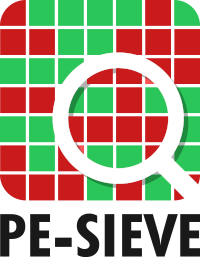

|
PE-sieve
Scans all running processes. Recognizes and dumps a variety of potentially malicious implants (replaced/implanted PEs, shellcodes, hooks, in-memory patches).
|
|
PE-sieve
Scans all running processes. Recognizes and dumps a variety of potentially malicious implants (replaced/implanted PEs, shellcodes, hooks, in-memory patches).
|



PE-sieve is a tool that helps to detect malware running on the system, as well as to collect the potentially malicious material for further analysis. Recognizes and dumps variety of implants within the scanned process: replaced/injected PEs, shellcodes, hooks, and other in-memory patches.
Detects inline hooks, Process Hollowing, Process Doppelgänging, Reflective DLL Injection, etc.
PE-sieve is meant to be a light-weight engine dedicated to scan a single process at the time. It can be built as an EXE or as a DLL. The DLL version exposes a simple API and can be easily integrated with other applications.
📦 Uses library: libPEConv
❓ FAQ - Frequently Asked Questions
🤔 Do you have any question that was not included in the FAQ? Join Discussions!
There are few other tools that use PE-sieve as an engine, but focus on some specific usecases. They offer additional features and filters on the top of its base.
📌 HollowsHunter - if instead of scanning a single process you want to scan multiple processes at once, or even the full system with PE-sieve, this is the tool for you
📌 MalUnpack - offers quick unpacking of supplied malware sample
Use recursive clone to get the repo together with the submodule:
Download the latest release, or read more.
Available also via:
logo by Baran Pirinçal